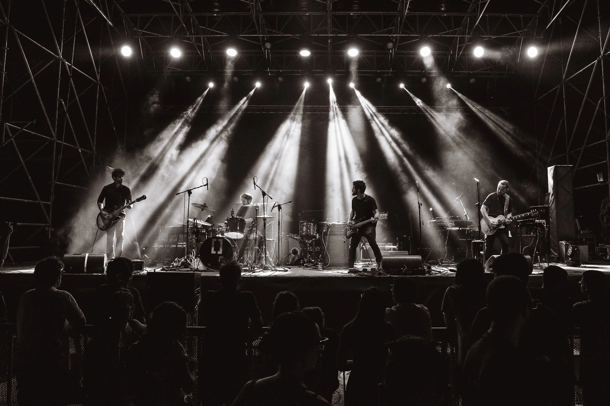
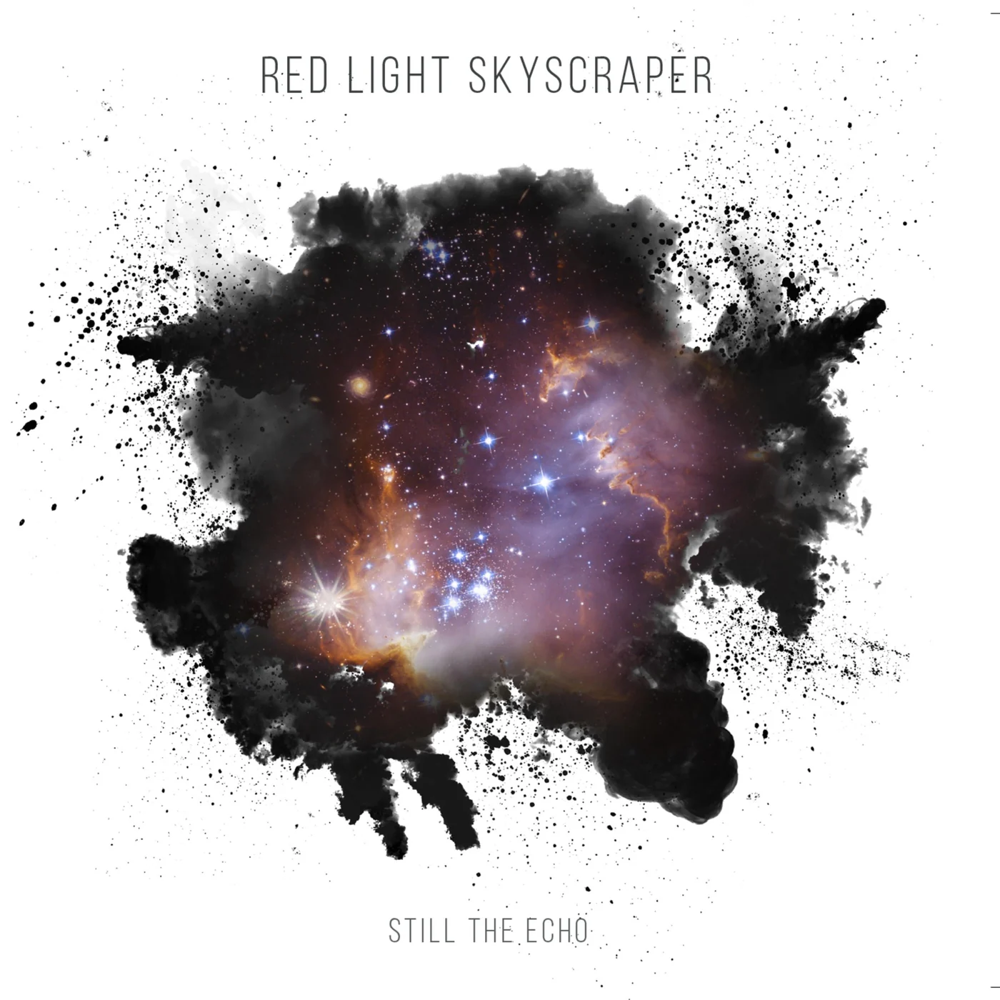
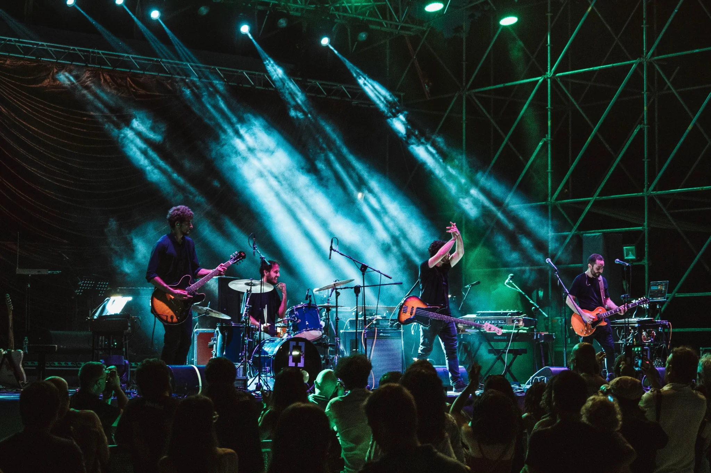
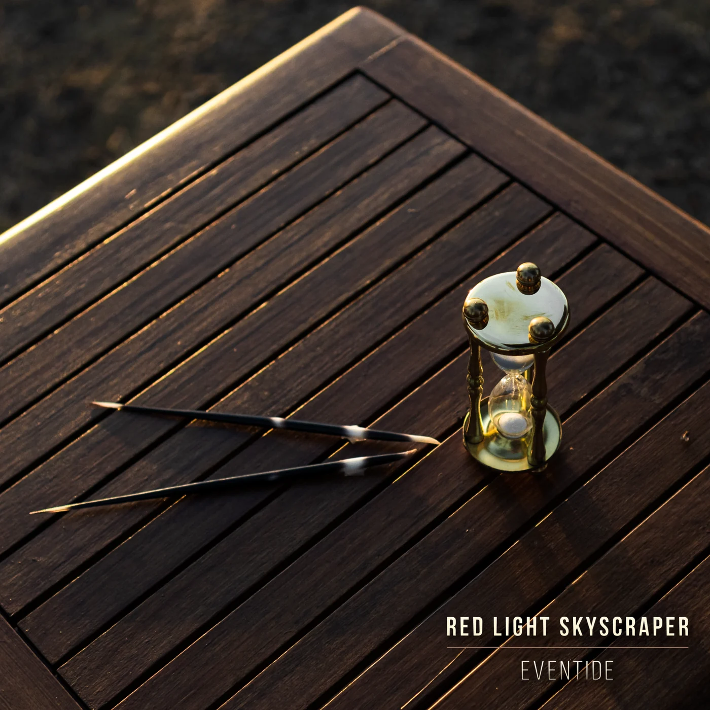
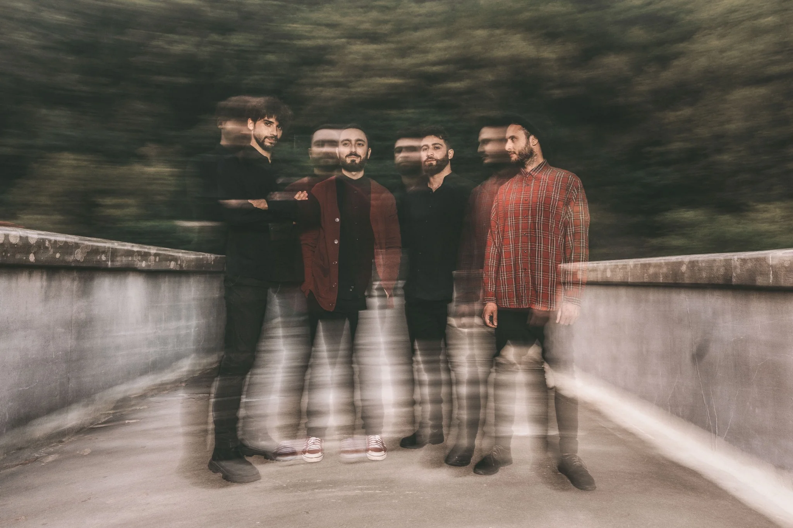

01
The experience
Each performance is conceived as a journey. The band moves through instrumental post-rock, visual projections and synced backdrops, turning the stage into a living cinematic space.
02
Music
One album, a sequence of singles and a new concept record in progress.

Album · 2017
Still the Echo
Instrumental post-rock soundscapes built around tension, release and emotional dynamics.
Discography
03
Videos
Official videos and live footage from the audiovisual side of the project.
04
Live
Selected shows and a complete archive of live performances.

Selected live moments
Full live archive
| Date | Venue / Event | City | Region / Country |
|---|


06
About
Formed in 2015 among the Tuscan hills, Red Light Skyscraper is an instrumental post-rock band blending cinematic tension, explosive dynamics and emotional melodies. The project stems from the fusion of diverse musical backgrounds, evolving into a wordless language that conveys emotional depth, inner journeys and urban atmospheres. With one album and over ten singles released, the band has performed at acclaimed events such as CONCRETION Festival and opened the debut tour of Calibro 35 plays Morricone. The band is now working on a new concept album born from an artistic collaboration with a Syrian photographer from Damascus, a dialogue between sound and imagery exploring memory, displacement and resilience.
Line-up
- Carlo Parillo — guitar, keys, voice
- Jacopo Palumbo — guitar
- Mattia Cella — bass
- Matteo Vispo — drums
07
Press & booking
Contact Red Light Skyscraper for festivals, clubs and special events across Europe and beyond.
“A post-rock driven by emotions with a strong narrative impact.”la Repubblica
“Still The Echo is pleasant to listen to, in which you can feel a thick sound.”Rockit
Booking / Press
redlight.skyscraper@gmail.comTechnical info
Set duration: 45–60 minutes. Standard four-piece rock band setup. Visual projections and synced backdrops. Full tech rider available upon request.